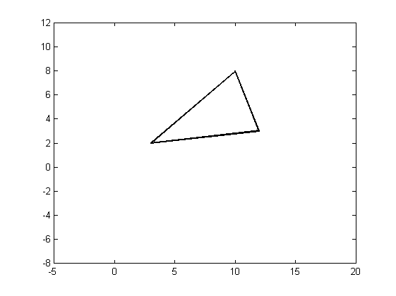
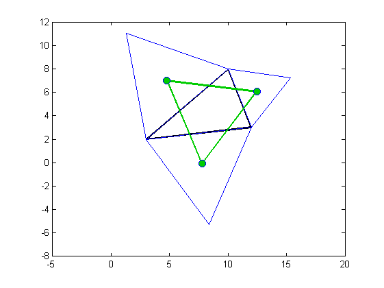

Contents
function demoNapoleon(varargin)
base triangle
A = [10 8];
B = [3 2];
C = [12 3];
ABC = [A ; B ; C];
figure;
drawPolygon(ABC, 'color', 'k', 'lineWidth', 2);
axis equal;
axis([-5 20 -8 12]);
hold on;

Equliateral triangles
tAB = createTriangle(B, A);
tBC = createTriangle(C, B);
tAC = createTriangle(A, C);
drawPolygon(tAB, 'color', 'b');
drawPolygon(tBC, 'color', 'b');
drawPolygon(tAC, 'color', 'b');

Compute centroid of each triangle
c1 = polygonCentroid(tAB);
c2 = polygonCentroid(tBC);
c3 = polygonCentroid(tAC);
triC = [c1; c2; c3];
drawPolygon(triC, 'lineWidth', 2, 'color', [0 .8 0]);
drawPoint(triC, 'marker', 'o', 'markerSize', 8, 'markerfacecolor', [0 .8 0]);
function tri = createTriangle(p1, p2)
d12 = distancePoints(p1, p2);
c1 = [p1 d12];
c2 = [p2 d12];
inters = intersectCircles(c1, c2);
indPos = isCounterClockwise(p1, p2, inters) > 0;
p3 = inters(indPos, :);
tri = [p1; p2; p3];
